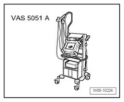

Components, Adapting
Components, Adapting
Adapting
Special tools, testers and auxiliary items required
- Vehicle diagnosis, testing and information system VAS 5051

- Diagnostic cable VAS 5051/1 or VAS 5051/3
Adapting procedure
- Select "Guided Fault Finding" on vehicle diagnosis, testing and information system VAS 5051.
After all control modules have been interrogated:
- Press "Go to" button
- Select "Function/Component selection"
- Select "Body"
- "Body Repairs"
- Select "01 - On Board Diagnostic (OBD) capable systems"
- Select "Airbag"
- Select "Functions"
- Select "Action"